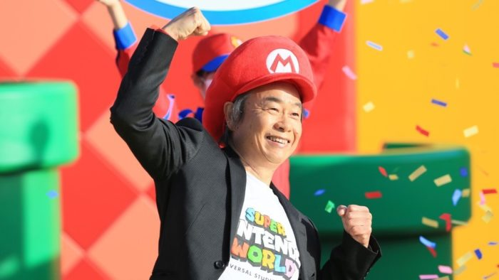

HISTÓRIA DO SUPER MÁRIO
Provavelmente todo mundo conhece e já jogou a história de Mario Bros, o famoso encanador que tenta salvar a namorada Pauline do gorila Donkey Kong. O que alguns podem não saber é que, no princípio, Mario nem mesmo era o personagem principal do jogo. Ele era conhecido com Jumpman e o jogo era só do Donkey Kong, Mario era só um participante. Toda essa história teve início em 1980. E na intenção de deixar o personagem o mais próximo possível com um humano, Mario Bros ganhou o seu conhecidíssimo bigode. Primeiramente, Mario era carpinteiro. Entretanto, por passear dentro de canos em seu jogo, ele começou a ser visto como um encanador. Com o passar do tempo e com o sucesso do jogo, Mario Bros foi ganhando mais destaque. Ele ganhou o irmão Luigi, sua história se tornou mais elaborada e com objetivos, além de ter seus vilões mais trabalhados. Sem falar, é claro, os novos poderes fornecidos a ele a seus amigos.
A ORIGEM DO MÁRIO BROS
Como dito anteriormente, Mario Bros surgiu pela primeira vez no jogo de Donkey Kong, seu nome era Jumpman. Entretanto, algumas pessoas começaram a ver várias semelhanças entre o personagem e um funcionário da Nintendo, seu nome era Mario Segali. Foi aí que decidiram batizar o Jumpman de Mario. Esse nome já começou a ser usado no jogo de sequência do gorila – Donkey Kong Jr.

Alguns detalhes do personagem foram criados para disfarçar a qualidade dos gráficos. Em primeiro lugar, Mario usa a boina porque os gráficos em 8-bit não permitiam que ele tivesse um cabelo bem-feito. Apesar de ter sido criada apenas como uma fuga das limitações, atualmente a boina é um dos maiores ícones dos videogames. Em segundo lugar, seu nariz é grande para se destacar no pequeno personagem. E por fim, Miyamoto, designer de Mario, colocou um grande bigode no personagem para esconder a boca que ele não tem. O problema é que, por ser tão pequeno, ela também não teria um bom desenho.
O "PAI" DO MÁRIO
Shigeru Miyamoto (宮本 茂 Miyamoto Shigeru?, Sonobe, 16 de novembro de 1952) é um designer e produtor de jogos eletrônicos japonês, conhecido por ser o criador de algumas das mais bem-sucedidas séries de jogos eletrônicos de todos os tempos, incluindo as séries Super Mario, Donkey Kong, The Legend of Zelda, Star Fox, F-Zero e Pikmin. Ele é amplamente conhecido como um dos designers mais talentosos e influentes da história da indústria de videogames.
Nascido em Sonobe, Japão, Miyamoto formou-se na Faculdade Municipal de Artes Industriais de Kanazawa. Ele originalmente procurou uma carreira como artista de mangás, até desenvolver um interesse em videogames. Com a ajuda de seu pai, ele entrou para a Nintendo em 1977 depois de chamar a atenção do presidente Hiroshi Yamauchi com seus brinquedos. Ele ajudou a criar arte para o jogo de arcade Sheriff, e mais tarde foi contratado para projetar um novo jogo de arcade, Donkey Kong.
CURIOSIDADES
Antes de ter seu primeiro jogo com seu nome, Mario foi a estrela de um outro jogo: Wrecking Crew. Em resumo, seu trabalho era destruir locais e chegar a um objetivo. Luigi participava do jogo também, sendo o segundo jogador. Wrecking Crew foi criado para o Nintendinho 8-bits. Apesar de manter o visual marcante da boina e o macacão vermelho, Mario aparece um pouco diferente no jogo. Além disso, ele usa um martelo como auxílio para destruir as paredes no seu caminho.
JOGOS DA SÉRIE
Segue lista de todos os jogos da série Mário Bros:
1988 Super Mario Bros 2
1988 Super Mario Bros 3
1989 Super Mario Land
1990 Super Mario World
1992 Super Mario Land 2: 6 Golden Coins
1995 Super Mario World 2: Yoshi's Island
1996 Super Mario 6
2002 Super Mario Sunshine
2006 New Super Mario Bros
2009 New Super Mario Bros Wii
2010 Super Mario Galaxy 2
2011 Super Mario 3D Land
2012 New Super Mario Bros 2
2013 Super Mario 3D World
2015 Super Mario Maker
2016 Super Mario Run
2017 Super Mario Odyssey
2019 Super Mario Maker 2
2021 Super Mario 3D World + Bowser's Fury